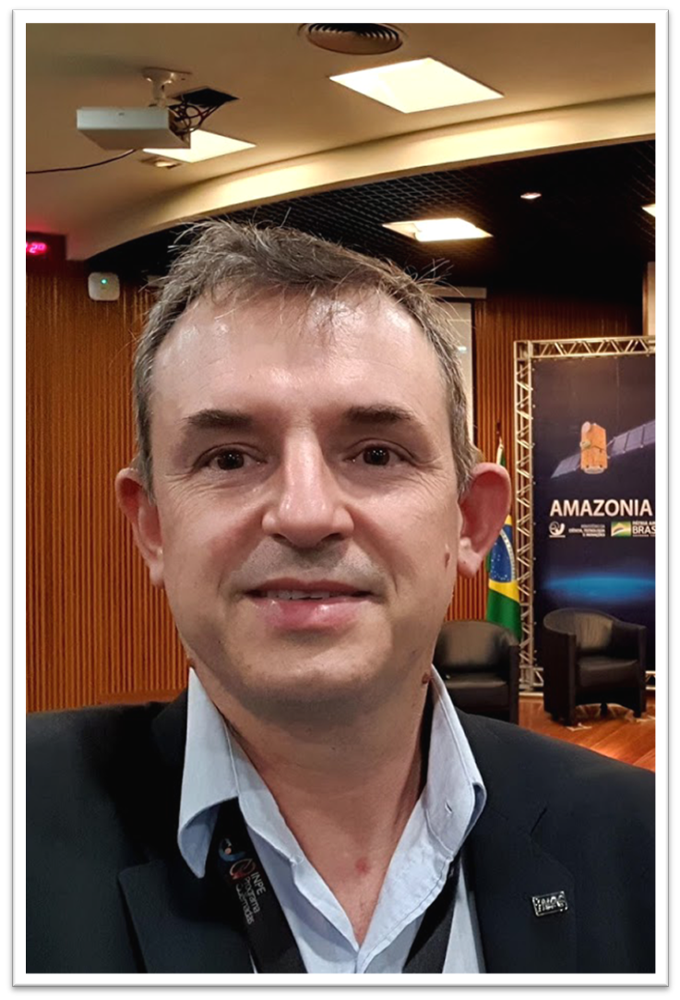

Docentes¶
|
Gilberto Ribeiro de Queiroz (INPE) |
Gilberto é tecnologista sênior do Instituto Nacional de Pesquisas Espaciais (INPE).
Possui mestrado e doutorado em Computação Aplicada.
Trabalha com projetos de pesquisa e desenvolvimento relacionados às geotecnologias
que apoiam as atividades do Programa de Monitoramento da Amazônia e Demais Biomas
Brasileiros.
|
Thales é pesquisador no Instituto Nacional de Pesquisas Espaciais (INPE),
doutor em Sensoriamento Remoto, com mestrado em Computação Aplicada
(ambos títulos obtidos no INPE). Também é Engenheiro de Computação pela
Universidade Federal do Rio Grande (FURG).
|
Thales Sehn Körting (INPE) |

 Fabiano Morelli (INPE) |
Fabiano é tecnologista sênior do Instituto Nacional de Pesquisas Espaciais (INPE).
Oceanógrafo, possui mestrado em Sensoriamento Remoto pelo INPE e doutorado em
Ciências pelo ITA.
|